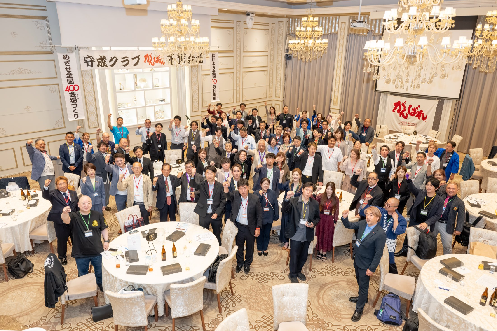

守成クラブ千葉会場 会員獲得の6つの型
会員獲得できる人は、感覚でやっています。その感覚には、ちゃんと理屈がある。それを、誰でも今日から使える「6つの型」に翻訳しました。
会場が200人になれば、あなたが例会1回で会える社長の数は、いまの2倍になる。これは会場のためである前に、あなたの商売の話です。
執筆・型化：今関貴文（株式会社ノビシロ）／監修：元吉（守成クラブ千葉会場 代表）・宮本（同 副代表）

元吉代表より
この型は、合わない人に無理に勧めるためのものではありません。守成をいいなと思ってくれる仲間を、丁寧に増やすためのものです。
※文面は元吉さん確認のうえ確定（ドラフト）
売り手が良いと思っていない商品は、どんなトークでも売れません。声かけに迷う人の大半は、トークの問題ではなく「自分が守成の何を良いと思っているか」が言語化できていないだけです。
それがあなたの行動の源泉です。元吉さんも言い切ります。「勧誘トークの手前で、まず自分が"守成めっちゃいい"と思う体験をすることが最初」。代表自身が、トークより先に、守成に対する価値観を強調しています。
前半 STEP 1-3
売り込む前に、
興味の「種」だけ蒔く。
基本トーク
「最近、新規のお客さんとの接点ってどう作ってます？」（自分が話すより、相手に話させる）
「経営者だけが毎月集まる会に入って、1回で100人ぐらいと名刺交換できるんですよ」
初対面での勧誘。信頼関係ができる前の誘いは、いくら種まきしても芽は出ません。
元吉さんの場合
さらに一歩引いて、相手から聞かせます。普段しない話（最近の学び、面白い人の話）をあえてして、「最近、何やってんの？」と相手に質問させてから「実はこういう会に入ってて」。誘われた側でなく聞いた側になった相手は、警戒せずに興味を持ちます。
宮本さんの場合
種をまく相手を選びます。相手の商売が分かっていて、守成の中の「この人と繋がれそう」が見えた人にだけ声をかける。誘い文句はシンプルです。「自分のやってることを、たくさんの人に知ってもらいたいんだったら、いい方法あるよ」。
なぜ効くか：人は会う回数が増えるほど、相手に好意を持ちます。初回で誘うと「勧誘された」という警戒が立ち、以後の接触が全部マイナスに働く。種まきと誘いを分けるのが、遠回りに見えて最短です。
頼むのは「入会」ではなく「見学」。
日程は、その場で。
基本トーク
「入会とかじゃなく、まず1回見に来てもらえたら。合わなかったらそれでいいので」
「次の第3木曜の夜、空いてます？（スマホを出す）仮でいいんで押さえちゃいましょう」
「都合いい時にまた声かけますね」。まず来ません。
元吉さんの場合
誘いの言葉を相手の反応で変えます。「100人くらい来ますよ」にポジティブな反応の人には「毎月行けばどんどん積み上がりますよ」、ネガティブな反応の人には「名簿があるので、皆さん名簿を見て会話する人を決めてますよ」。台本の一本槍でなく、相手の温度を測ってから言葉を選ぶ。
宮本さんの場合
昔は「とりあえず来てみて」で誘って、打率は高くなかった。いまは事前の会話で乗ってこない人は誘わない。その結果、声をかけた人の8割方が入会します。誘う前に、相手の意欲を確かめる。質を上げるのはこの段階です。
なぜ効くか：小さなお願いにYesと言った人は、次の大きなお願いにもYesと言いやすくなります（心理学の実験でも確認されている定番の原理です）。そして「今度ぜひ」は社交辞令として処理され、日付を決めない誘いは記憶から削除されます。
申込から当日までの熱の低下を、
接触の設計で防ぐ。ただし3回まで。
基本トーク（3回の型）
誘った当日
お礼＋「当日、僕の紹介ゲストとして会員の皆さんに紹介しますね。名刺100枚以上持ってきてくださいね」
3日前
「会いたい業種の人がいたら繋ぐので、どんな人と会いたいか教えてもらえますか？あと、120秒で自社PRの時間があるので内容考えておいてくださいね」
当日朝
「本日17時半に、会場入り口で待ち合わせしましょう。名刺忘れないように。良き出会いをサポートしますね」
誘って当日まで放置。かなりの確率でドタキャンになります。
元吉さんの場合
連絡に必ず持ち物と人数を入れます（「100人来るから名刺は100枚以上ね」）。実務連絡の顔をした温度測定で、その反応から当日のフォローの仕方を調整する。連絡1本に2つの仕事をさせています。
宮本さんの場合
元吉さんと正反対で、あえて手をかけません。「明日何時ね、名刺持ってきてね」くらい。理由は明確で、「来ると決めたのは自分だ」と思ってもらうため。お膳立てしすぎると、相手の決意が育たない。
こまめ派（元吉さん）と任せる派（宮本さん）、どちらも正解です。ゲストのタイプと、あなたのスタイルで選んでください。
なぜ効くか：人の熱意は誘われた瞬間が最高値で、当日に向けて必ず下がります。適度な接触は安心を保ちますが、やりすぎは逆効果。だから回数を決めておくのです。
後半 STEP 4-6
ここまでの3つで、ゲストは例会に来る確率が上がります。ここからは「来た人が入会したくなる」3つです。
ゲストの印象は、会の中身より
「最初に話した1人」で決まる。
基本トーク
120秒PRの前
「"○○業の社長を探してます"と具体的に言うのがコツです。隣でフォローします」
懇親会
「名簿を見て気になった人いました？今すぐ繋ぎますよ」（先に与える）
ゲストを放置して自分の商談へ。孤立したゲストは二度と来ません。
元吉さんの場合
繋ぐ相手を、ゲストのタイプで変えます。恥ずかしがり屋なら聞き上手な会員に、勢いのある人には勢いのある会員に。「最初に合わない人と会うと"この会は違うかも"と初手からずれる」から。誰に繋ぐかまで設計するのが、アテンドの本当の仕事です。
宮本さんの場合
例会の価値を、こう言い切ります。「一方通行でも、一度に何十人もの社長に自分の商売を話せる機会なんて、なかなかない」。120秒PRを前に緊張しているゲストには、この一言で意味づけしてあげてください。
なぜ効くか：初参加者は情報量に圧倒されて、体験を自分で意味づけできません。最初の1人が「合う人」なら会全体が良く見える。紹介も「誰でも」では動かず、具体的な相手像で動きます。
こちらが説得しない。
良かった点を本人に言ってもらい、
その勢いで。
基本トーク
「今日、どこが良かったですか？ 誰と話して印象良かったですか？」
（相手が答えたら）「ですよね。○○さんみたいなタイプ、この会ほんと合うんですよ」
「今日繋がった人と深く付き合うためにも、次回から会員で来ませんか。手続きはサポートします」
「持ち帰ってご検討ください」。熱はその場が最高値です。押しすぎも禁物、1回押して引く。
元吉さんの場合
入会の意思が見えた人には、入る前提で未来の話をします（「じゃあ来月からこうだね」）。決めきれない人には自分で押さず、同年代・境遇の似た会員に背中を押してもらう。少しでも意思のある人からは、「書いて入金するまでは入会になりません」と正直に伝えた上で、入会申込書を預かります。手元に申込書がある人は、戻ってきます。
宮本さんの場合
当日は、押しません。「お金もかかることだし、会場の雰囲気を見て、最後は自分で決めてもらえればいい」。
誘う段階（STEP2）で意欲を確かめているから、最後は委ねられる。前の工程の質が、後の工程の余裕を作ります。
なぜ効くか：「どうでした？」は不満も引き出す質問ですが、「どこが良かったですか？」は良い点を思い出してもらう質問。人は自分の口で言ったことを大切にします。
翌日に聞く。
その後は間隔を空けて、
押さずに続ける。
基本トーク
翌日
「昨日はお疲れさまでした。1日経ってみて、どうですか？」
以後
1週間おきに軽く。「その後どうですか？」
断られたら
「また別の機会に。周りに守成が合いそうな社長さんがいたら、教えてください」（関係は切らない）
連れてきたのに入らなかった、とがっかりして大半の人が連絡をやめる。定期的に連絡するだけで差がつきます。
元吉さんの場合
例会の場は人が多く、ゲストは本音を言えません。だから翌日に聞く。千葉会場では当日入会しなかったゲストに翌日のフォローを入れていて、後日の入会は珍しくありません。
当日決まらない＝見送りではなく、翌日からが本番です。
宮本さんの場合
入会しなかった人には、必ず理由を聞きます。そして入会した人には、最初にこう伝えます。「入会はゴールじゃない。参加してなんぼ」。
理由を聞けば、次の誘い方が変わる。ここまでやると、会員獲得の型は磨き込まれ続けます。
なぜ効くか：接触を続ければ関係は保てますが、催促に変わった瞬間、関係ごと失います。だから翌日と、あとは軽く。
最後に
会場が200人になれば、あなたが例会1回で会える社長も、あなたを紹介できる人も、いまの2倍になる。会員獲得は会場への奉仕ではなく、自分の商売圏を自分で広げる投資です。
あなたが今週まく1粒の種が、来月のあなたの商談になって返ってきます。一緒に、200人やりましょう。